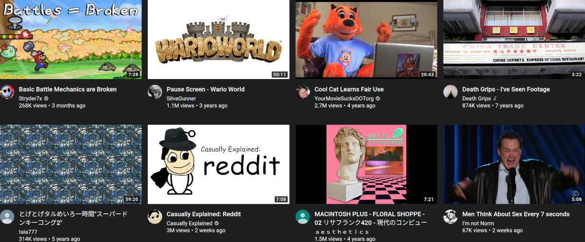
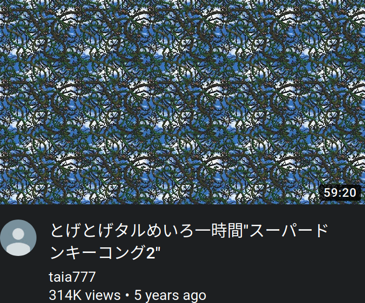

Hangover Archives: 2020–02
Crazy Froge Sayin’ and his Harem of Gnome Women in “The Curse of the Cringe Compilation”
Now my story begins in January dicketydickety. We had to say “dickety” because the Kaiser had stolen our word “twenty”. I was a young Frogeling back then, and I was full of jizzum! But even as a newborn I had some baggage of my own, because I was never meant to survive the operation that saved my mother’s life… that’s how I became who I am today. Plus several decades of hardcore pornography. I wrote the following four weeks ago, before going forth and taking revenge on Count Major Gunner in a duel to the death over some dame we don’t even know the name of, as was the style of the time.
“My goal for Frogesay from here to eternity is to dig up all the cringey, crappy, no-good garbage articles I wrote in the distant past and bring them to light so that we can all point at them and laugh. And then I’ll cry, because I will be laughing at myself, and I can’t take criticism! That’s why I became a games critic ― to dish it out, but not to receive. I hope that through this effort I can clear up my hard drive and stop caring about all the nonsense projects, nonstarter article series, and nbadlywritten poetry that I wrote that I’m never, ever getting published, so I might as well show you here.”
Now I may have cried more than once since that fateful day called January, mostly over animals who I never met and who will never meet me. But it wasn’t over no “digging” or “cringe culture”! I’m old, damn it. I don’t have time to spend the rest of my life focusing on the past, and all you readers who have disappointed me over the years. No, I am not a crank. But now that I’m in my golden years, and I’ve slowed down since they institutionalised me over some Light treasonous acts, I’ve had to do some hard thinking. I’m never going to fulfill my dream of writing that novel. I’m never going to travel across all forty-nine states, especially not since they put in that “no-fly list”! No, I’m just going to sit here on my electric typewriter and reminisce over everything I’ve ever done. And you’re going to like it!
I did my time. I wrote my articles. I wrote a lot more than you’ll ever see, things that will make you go crazy just looking at ’em… crazy like me! Boo! Ah, hah hah hah! You should see the look on your face! Ah, uh, where was I? Alright, I got your dander up. Now you wanna see the cringe compilation. You wanna see all the dirty, no-good secrets I dug up and sold to the Viet Cong back in the second World War 2. Well, you can’t have them! I deleted them from my computational hard disks! I’ll die before anyone gets to see my old humbug! And with each passing day, my dream comes closer to reality. Oh, why couldn’t I have moved to Alaska and get some of that socially-acceptable euthanasia? If you smuggle your pills in this place they put you in the Hole, but if you do it out in the wilderness they put you in the newspaper and Jack Layton makes you a biography!
Ah, I burned all my old doohickeys in those virtual fires I set alight, along with all the real ones. That’s how I know about the Hole and Jimmy Two-Limbs. I wasn’t ever gonna publish them. I wasn’t gonna look them over and feel good for making them. Of course I kept some with my as mementos, things I knew I could show to the grandkids through this miscegenistic Web portal, who are my only earthly reminders that once upon a time I had sex. But even then I still got sixty of ’em I could show you… not the kids, I ain’t that jizzum’d. Sixty things, I tell you! Projects! Writings! That time I wrote about 5,000 shortstack hentai images! And that was some good titty, I tells ya. Boy, that takes me back to the good old days of dicketynineteen. I was a young boy back then, and my meat was reasonably shaped…
Now I’m all alone in this world, and I got nobody to talk to except those pretty girls on Virtual Reality Chat. They don’t need an old fart like me. They don’t even keep me hip with the memes anymore. Back in the day they used to call me a boomer, but now they’re calling my kids boomers, too. I’m long for the connection that keeps me alive, and maybe I’ll find it through bringing to light all my old writings, and maybe you’ll like ’em like I liked making them. But if I don’t, know that I’ve done more in my life than all you ever have. And that makes me better than you. Ha-ha-ha. Yours truly, Grandpa Frogesay.
Get your hands off me, I ain’t dead yet! I’m just thinking is all. Thinking about the hentai. Mmm, them’s good eatings…
Watching Me, Watching Me, Watch Them Watch Me
As I weathered the storms of the Web and travelled the valleys of mediocrity I willingly subject myself to with some vague notion that I will be more entertained with them than anything else in my life short of abducting a bug and making it crawl up a wall so I can analyse its movements and write a dissertation on the locomotive patterns of the the domestic house spider, or watching JoJo’s, I found an article on Reddit. Then I read it. You can say I… read it on Reddit.
Cough.
Anyway, Wacom fucked something up again. If you’re not an artist you’re thankfully outside this circle of proprietary oligarchic hardware hell, but to dig up the lede from its shallow grave: they put spyware in the mouse drivers. Yes, the fucking mouse drivers. Apparently this is something that MacOS users need, unlike Linux. What’s that, AppLEL? I’m sorry, I can’t hear you over the wooshing of my tremendous Linux balls.
Oh, boy, a shady and incompetent company from a faraway land in the magical realm of Japan is hostile towards its users. What’s next? Google killing another product? As it turns out, gigantic legacy corporations with no meaningful competition and no incentive to change make terrible decisions on a constant basis. And Wacom’s decision to put spyware in their products isn’t even original, barring the fact they put it in the fucking mouse drivers. And the fucking mouse drivers come with a fucking privacy policy, because this is Blade Runner times and all we need now is some dude running around blasting caps in android ass and having dreams about unicorns that are never explained, just like most of whatever the hell Blade Runner was about. Fuck Blade Runner, fuck Wacom, fuck Fortnite and fuck Gaming. And fuck you, too. Yes, you, reader. Now hop in my 1987 Ford POS so we can raid Wacom’s source code for the good of the people. Ignore the bag of coke.
Anyway, the article is an interesting read (THIS IS THE ARTICLE. THE ARTICLE IS THERE.) and reveals how clandestine malware can be inserted into mandatory software installations with no oversight and little chance of discovery by the end-user, even given efforts taken to reveal the malware in question. Because when you have the ability to give your software the ability to collect the names of every single application your customers open up, why the fuck wouldn’t you include that capacity in the fucking mouse drivers? This is Wacom’s world, baby. And we’re just living in it. Please ignore the existence of the thousands of companies more important than Wacom and with vastly more capacity to exert their malicious intent on global infrastructure.
The author closes his article with a heartfelt message to Wacom: he took his beloved Wacom drawing tablet and put it on a little paper dinghy to to set alight in a nearby pond. Just kidding, he accepted the terms and conditions and is still using the tablet. With the spyware mouse drivers — sorry, the spyware fucking mouse drivers. Because the fall of capitalism will not end with blood in the streets and riots in every city. It’ll end with sheer indifference against the eyes you invite into your home. They’re big motherfuckers, too. You can’t shine a laser pointer in them and call it a day — no, you need a spotlight and the whole lightworks. Because the name of the game… is lightworks. MF DOOM. Pac.
Ln.ao. d.nl m. dr, er C yfl. rb ydco ydcbi
I’m drunk and sick and have spent the past undefined amount of hours watching YouTube videos and wondering what the hell I’m doing here. By drunk I mean I had one shot of orange-flavoured liqueur in orange-flavoured juice, and by sick I mean I’ve had a lovely case of the [REDACTED]. At least it’s not some of that CORONAVIRUS, A HA HA HA HA HA HA. That’s a topical joke. But at least I’m not drinking that CORONA LITE AH ― fuck. Anyway, yeah, cool, why not indulge in Ashens’ channel for the past eight hours? Oh, because he’s forty-three. That means he’s old. Also because his gimmick is staring at a couch while looking at… “tat”… while making jokes in that British way about the… “tat”… he’s looking at. I don’t know why I’m doing that with the word… “tat”… because it’s entirely innocent. I also don’t know why I’m writing right now. Why am I writing right now? Do you know why I’m writing right now? Right now. Write. They rhyme.
All of this is to talk about Dvorak. Or maybe Colemak. Or dipping my keyboard in pheromones and having the dog do the deed with all the delicate keys, if I had a dog, or any living creatures who liked me generally. Yes, it’s time for me to discuss keyboarding efficiency and which layout offers the fastest and most comfortable experience for skilled typists the world over. First, let’s discuss the hard data: there is none. All the results are based on conjecture and any information discussing the benefits to each layout is subjective. As human beings are subjective generally this doesn’t matter those who feel their preferred layout provides the most optimal typing environment for then. It also doesn’t matter to the majority of you who will ride on the QWERTY train for the next sixty years before getting blown up by the IAF because of a disastrous series of foreign policy decisions leading to a two-trillion dollar war with Iran and a global depression. Internationally unlawful assassinations: the right move for your small business?
Oh, Christ, I’m talking about fucking keyboarding and killing brown people. Someone should kill me. Hahaha. You see, that’s the self-deprecating humour I use to mask my eternal struggle with all the world. Oh, look, there it is again! We’re getting extra-deprecating today!
Since we’re on this journey together and we haven’t yet noticed the pipe bombs under the carriage, let’s talk about layouts. What you have is QWERTY, unless you’re weird, or foreign. Then you have something else which doesn’t matter. QWERTY is an uncomfortable layout to type on because it was designed to space out often-used combinations of letters in order to prevent a typewriter from jamming on the writer. It is therefore totally obsolete, and because the free market always gravitates towards the best products, alternate typing schemes which ignore the utter irrelevance of all typewriting technology have become massively successful and beloved the world over. Just kidding, they were dead on arrival.
There are exceptions to this technological irrelevance. Since we live in a version of 1984 where Big Brother is less an iron-fisted dictator and more a passive-aggressive sort who only gets upset with you when you traffic several thousand kilograms of black tar heroin, the Kremlin still uses manual typewriters to prevent NSA spooks from stealing their state secrets. Apparently they’ve never heard of airplane mode. Or OpenBSD. You know, spooky scary communists, if you contributed to free software more often it would trickle down and make your death camps more secure. Yes, I am saying I’m smarter than hundreds of thousands of intelligence officials. Also, the KGB never died. Have a list of secret police organisations active to this day. That’s just how they do things across the pond; the unaccountable extrajudicial torture is part of the local flavour.
So Dvorak. That’s the layout all the cool kids use, as even in the social structure of typographic computer science geekery there exists Chads and Virgins like normie society proper, although on a relative scale. One of the insights I’ve learned from my years of e-girl indulgence and empty bank balances is how many of them are nerds with college degrees who care about such trivialities, not that you’d know that from all their fanny flashes. The way Dvorak is advertised is like a revelation from the ages, which alchemists and magicians have used for millenia, and yes they did have keyboards. Ask Wikileaks. Just look at the problems it fixes! It’ll also destroy your muscle memory by putting the copy and paste shortcuts from the bottom left into Narnia.
Isn’t there a better solution, so that we can learn a more sensible mode of operating while retaining the computing functions we all admire? No. But since we’re enlightened centrists, I should talk about Colemak. It exists. Its Wikipedia article is shorter than this Hangover, and you should read it if you’re looking for information instead of camgirl fanny. Colemak changes a few things around, just a few things, like a little mozarella here and some pasta fasul there, bing bing wahoo you got yourself a layout. And it’s going to be as hellish to learn as any other layout unless you go cold turkey and quit your previous schematic like Joedick Petercunt quit his addiction to horse tranq, and for what? For WHAT, I tell you? No, not about the horse tranq. I already have my drug of choice: Pokémon hentai. Cocaine.
What does this mean for you? Well, you’re not going to switch away from QWERTY anytime soon, and any attempts I make to do so will be a long and arduous process that will tank my blogging productivity even more so than it already has over the past ten days. Maybe it’s for the best that I don’t deliver my words on time. Maybe it’s better to let them seep in over four days instead of flushing them out over two. Maybe I’ll get some classified Russian mad science medical experiments done on me and kick my coke addiction in favour of going full lobster and dreaming incessantly about all the spooky scary minorities living rent-free inside my cracked-out head. And maybe I’ll finally learn Dvorak and make my fingers do a sad dab across the keys to produce my excellent screeds. Or Dvorak Simplified. Or Dvorak Simplified USA English International With Alt Gr Dead Keys. Yes, I just used a keyboard layout as a punchline. You may now laugh.
LAUGH.
Froge’s Latest Blog Entry [Subscribe to this Blog]
Today I had the pleasure of coming across an archival website that hosts obscure songs from virtually unknown bands that are of surprising quality given their renown, and I was impressed at how competently it distributes video content while still maintaining a large collection of classic tracks. It’s called YouTube, and though I’m sure it’s a matter of time before it gets purchased by Google and has all the independent creativity sucked out of it, there’s no way a search engine would gamble on multimedia content. Just imagine Google as a company promoting “YouTubers” as inherently stupid as Smosh and FRED. Why would they damage their reputation by touching that shit with a ten-foot pole? Maybe the mainstream MTV scum-sucking teenagers are content to watch garbage like that. They’re out here still watching season 17 of The Simpsons (shout-outs to No Homers and alt.tv.simpsons), but they’re going to grow up and teach their kids not to rely on the Internet for entertainment.
Being a YouTube eCeleb is like making a social network for college students and expecting to overtake MySpace (looking at you, Thefacebook). But maybe I’m just being cynical. The company that killed AltaVista couldn’t possibly make such a terrible business decision. That would be like making a gaming console and going up against Nintendo and Microsoft! Too bad Sony dropped out of the console race with its gimmicky wireless controllers and that Blu-ray boondoggle. Yeah, like people are going to swap out their HD-DVD collections for a proprietary standard with no players on the market. Haven’t we learned anything from the Dreamcast? New technology is cool and all, but what people really want is great games and timeless classics, like Indigo Prophecy and SWAT 4. Good thing the Xbox 360 is here to show old-headed Nintendo how to make a quality console. The original Xbox hardware was so amazing, there’s no way that Sony is going to compete on graphics, even with a $600 price tag!
Sony still has a better shot on the market than Nintendo. Really, guys? They’re calling it the “Wii”. The fucking “Wii”. This is less of a console and more of a joke. Who the hell would get off their couch just to play video games? Why is the games controller shaped like a remote control? And what type of launch title features fucking bowling as a selling point? This is the Nintendo 64 all over again: Nintendo got too invested in their gimmicks and released yet another dead console that’ll get clown stomped by the competition. At least they abandoned that cartoon Wind Waker business going on. Everyone knows you can’t beat Ocarina of Time, but Twilight Princess will still go down as one of the best Zelda games ever made. I think this Gamespot article sums up Nintendo’s attitude towards gamers:
“Innovation is also a key selling point for the console says Runte. The console's controller, which is shaped like a TV remote, uses motion sensors to effectively simulate swinging a sword, casting a fishing line, or shooting a gun”.
Nintendo thinks we’re fucking idiots.
Anyway, thanks to YouTube I’ve been hearing some great new music from independent artists I wouldn’t have heard before. It’s too bad they’re getting sued by every record label in existence, but they’re still sticking to their guns and not letting the copyright sharks get their way. My dream outcome is that every YouTube video gets licensed under this new “Creative Commons” thing going on, which is a bit like the GPL but for non-software. I hope it gains popularity online like what Techdirt has been campaigning for years, but if not, we still have Oink’s Pink Palace. It’s nice to have torrent sites that are somewhat well-kept, unlike The Pirate Bay’s spam problem, especially since my family is still using this LimeWire business. They tried to get me on this underground rapper called Kanye West. And, I don’t know, I think he’s too soft for mainstream appeal. We got guys like 50 Cent and Busta Rhymes on the mix, and this guy is rapping about going on a spaceship? Yeah, no thanks. He’s trying to go toe-to-toe against masterpieces like Tha Carter II. Now, Lil Wayne? That’s a GOAT. He’s gonna stay on the cut forever, man!
I don’t know what’s going to happen in the future, but I do know one thing: it’s gonna happen. In 2016 we’re gonna be playing wireless multiplayer on the PlayStation 4, watching TV on our Xbox 720s, watching 3D movies on the 3DS, and emulating GameCube games on the Wii 2! After that we’ll jam out to our YouTube playlists on the iPod 8, watch South Park season 20 through the Netflix Online app, play RuneScape 3 on our 6GHz 20-core processors, and rule34.com will upload its millionth image. Then we’ll upload our brains into virtual reality, roleplay as anime girls with our 8K plasma screens, see furries and weeaboos become bigger than Neopets, millions of grown men will become obsessed with My Little Pony (ponybros?), global elections will be hosted by the confederacy of 2, 4, 8, and 16chan, and we’ll all get our government-issued fursonas while we ride into the sunset on our hoverboards and self-driving cars after watching Star Wars 9 conclude the epic ennealogy of the greatest film series ever made. And then Donald Trump will become President of the United States.
Look, it’s more likely than a Black man.
Please look at this image:

Have your eyeballs been saturated enough? You can stop looking, now.
First of all, fuck YouTube’s recommendations. I don’t mean fuck ’em as in they’re bad. I mean fuck ’em as in they don’t matter. Yes, I have Cringe Cat and Ebically Exblained: Low-ebbort Shitposts in my feed, because YouTube thinks I’m a meme-loving teenager with too much free time. YouTube also thinks I’m stupid. But that doesn’t matter. Because your recommendations are based on the watch history embedded in your YouTube cookies, you can clear them out every so often and get a new profile. Through some incantation of algorithmic alchemy, I have received a profile that gives me an eclectic mix of normified meme content and incredibly obscure years-old uploads which are only revealed through the favour of the YouTube Gods, such as videos with foreign-language titles, mysterious and impenetrable thumbnails, and an unkempt profile carelessly thrown together with the whimsy of either an auteur or an amateur. Perhaps both.
Incredibly obscure uploads… such as this one:

There is a gentleman’s agreement not to share this video. It is not something for mass consumption ― something you spread around without thought. I am not a gentleman; a gentleman possesses the power to do great harm to other human beings, and yet restrains that power to exist in polite society. In terms of power… I have none. At best I am a snake, apparently fragile, yet unpredictable when faced with uncertain impulse. The forward-facing friendly image the Internet presents itself to genteel society is a façade easily-disrupted by Web geek veterans who have surfed long enough to see each and every unlisted crevice beneath the seedy underbelly of this sprawling beast we explore undisturbed through our browsers. And when faced with this obscure, uncertain stimulus, I do what the snake does: I stay and fight my response to flee, or I run away to never discover the natural wonders before me.
Entering this stretch of the uncharted Web is entering a world where the open arms of corporate interests and business-casual culture is fleeing and fading fast. It’s where the unexpected consistently occurs, where normie culture fades fast into the obscure and undocumented, and where the trances of our dreams become reality, with some of our realities becoming dreams. One of these short stretches is the territory of taia777. They are not special for who they are. They are special for who they host. The comments on their videos are… phenomenal. Their channel has been declared the border of the Internet, one of the four corners of YouTube, and the inevitable intersection of diasporic peoples. The community here is a community founded on the memory of a lucid dream long gone ― the harder you look for it, the less it is there.
From an empirical viewpoint, the video is nothing special. The Japanese title translates to “Stickerbrush Symphony ‘Donkey Kong Country 2’”. The thumbnail is a background image of the level “Bramble Blast” from that game, while the video has a looping animation of clouds behind it and tessellated vines in the foreground. The namesake song is extended and looped for fifty-nine minutes and twenty seconds; there is nothing obviously abnormal about the audiovisual content. Extending this analysis to the rest of taia777’s channel reveals it’s a Japanese channel that uploads video game background music set to artfully-crafted looping visuals, with twenty-seven of the twenty-eight videos being over five years old. The profile is blank and has no discernable presence besides the videos themselves. taia777 does not even add descriptions to their videos. While searching for their username reveals a minor Web presence, including a poorly-maintained fan-made subreddit, the associated accounts have been abandoned.
If this was a Barely Sociable or blameitonjorge video, I would exhume every little detail of taia777’s online life in search of a hint as to why they are uploading these videos, why they are being recommended to a specific group of dedicated YouTube viewers, why there’s a microculture developed around commenting on these nondescript videos, and what the person or persons behind this account has to gain from partaking in this little Net art experiment. But there’s no point to it. Unexplainable phenomena are most often a result of hoaxes, human incompetence, or a mundane series of events that are individually inert yet cascade into something insidious. The facts of life are most often boring; we do not chase after mysteries for their resolution, but because we seek the thrill of being fooled by what we do not understand. Even if the emotional high is temporary, and our lower-level rationality picks apart the details of events we can’t comprehend, we still chase after those few events that make us excited to uncover them. Curiosity is an inherent part of human existence, and so long as we lust for discovery, we will satiate our exploratory desires through whatever means offered.
In essence, the mystery of taia777 is the mystery of all of YouTube: why are these videos being recommended to me? And the answer, similarly, is the answer of all of YouTube. As Tom Scott explains, nobody knows how YouTube works, but we know why we don’t know why it works. YouTube recommends videos based on viewer retention. The reason clicking on one Zero Punctuation video gives you a recommendations list filled with nothing but Zero Punctuation is because fans of that series tend to watch an insane amount of Zero Punctuation videos in one sitting, which makes the YouTube algorithm go absolutely bonkers and overflow your recommendations with videos and channels that have loyal, dedicated audiences who watch each video from beginning to end. While liking and subscribing makes your favourite YouTuber’s channel statistics go up, what really matters is the watch time. So long as an audience clicks on every video and watches them through to the finish, their videos will be recommended to whoever YouTube thinks will do the same.
The raison d’être of this channel can be explained simply. Someone in a foreign country uploaded video games music with visuals of their own creation. They got popular among Japanese-speaking video game fans who enjoy listening in. Because they were popular over the years, YouTube recommends the videos to people who it thinks will continue to consistently listen in. Now we get to the “And Then A Miracle Occurred” part of the analysis. At some point in time some English-speaking viewers made jokes in the comments saying that people viewing these videos “have reached the end of the Internet”. From there, the joke goes on further with additional commentators saying “If this was on your recommended, consider yourself a main character on earth” and “If you are reading this, you must understand that you can not share or reccomend this video to anyone. This video must find them”. The community is thus founded on the decrees of these ancestral writings, and visitors join in on the traditions.
As the channel hosts video games music from cult classic titles, it immediately creates a soundstage of long-lost nostalgia emotionally primed for empathy of each other’s woes. Stickerbush Symphony in particular is a wistful, melancholic tune for a surreal and implacable level, and is one of the most technically-proficient and emotionally-resonant video game compositions ever created. It’s no wonder why fans of this music are willing and are encouraged to express their most genuine emotions in a public space. The community loves the art, and the art creates the community. It’s because of this confluence of events that something as simple as someone uploading games music they enjoy with high-effort visuals leads to people with similar interests congregating together, especially given the inoffensive and undemanding nature of the videos being recommended. The recommendation is both the invitation and the enticement. The mystery on display is all there is to see. And so long as there exists people willing to share their work on the Internet, there will always be fans partaking the same creations, and we will continue to see channels such as taia777 becoming campgrounds for the nomadic peoples travelling on the edge of the Internet.
Why do these videos host the communities they do? Blind. Fucking. Luck.
Oh, and Kotaku got to it first.
Fuck Kotaku.
The Mediocre State of my Mediocre Works
Froge’s old work. Hey. It exists.
Remember two months ago when I said I would show it to you so I could get it off my hard drive and stop thinking about it so I finally clear up some mental space to devote to more pornography and RuneScape trivia? No? Of course you wouldn’t, you fake fucking fan. You are a liar, a snowflake, uh, liberal. Liberal. We have a liberal alert, the liberal detection system has ― what the hell is this bit? Anyway, one of the reasons I’ve haven’t been doing that is because it would require the organisation of the vast quantities of crap I keep imprisoned in my magnetic jungle. Another reason is it would require me to confront the stupidity of my past self and wonder what the hell state of mind I was in to write some of this crap. A third reason is because I’m too busy constructing all this original content JUST FOR YOU! Did you know I write over 15,000 words per month? That takes effort, you know! I wish it didn’t.
My state of mind over the past few years has wavered between ingenuity, self-deprecation, arrogance, obsession over minor torts, self-hatred, others-hatred, and the occasional moment of pure fucking bliss. You see someone self-describe themselves as neurotic, and you think of them like, “oh they’re just worried about everything, they just gotta take a chill pill, man”. And I am neurotic, as I’ve had the pleasure of being articulated to me. It’s not about worry. It’s about… everything. It’s about emotions, moods, stimulus, and the extremely poor reactions I have to trusting, managing, and accepting the existence thereof. It’s not about having a shitty form of manic-depressive disorder; as far I as know I don’t have any clinical mental health issues. It’s about having both excessive unrestrained reactions to positive events and excessively self-deprecating reactions to negative events. As a result of this, it’s difficult to suggest I’ve had any evidence of a consistent personality over the years, besides a vague moral undercurrent of self-awareness and self-improvement. And sarcasm.
Is it any wonder why entertainers simultaneously spend their lives in service of making other people happy while suffering from serious mental health issues in private? Is it any wonder why Robin Williams hanged himself on a closet frame? For the average audience member, of course it comes as a shock. They’ve never been behind the curtain. They don’t know the comedian’s state of being ― the selflessness of performing, the joy of entertaining, the pain of rejection, and the dozens of personal issues that come from being so reliant on the validation of others and the inability to differentiate between who you are as a person and who you are on the stage. When does the actor stop being the character? When do words said in jest become genuine opinion? And how much of my bullshitting, over-the-top rhetoric is a function of who I am and what I think, and how much of it is said solely through the troll’s mindset of saying whatever hot garbage crosses my mind for the sake of provocation?
Half a year ago I would have been significantly more obsessed with these questions and drag down my personal relationships with endless, uncertain self-reflections about who I am, what I think, what my place in the world is, what I’m doing with my life, and why the hell I’m even alive if there’s nothing I’ve created that anyone legitimately cares about. I have a Fur Affinity account named 10kbgallery, but I don’t advertise it because there’s really nothing on there (although I do have 1,100 comments, astoundingly). One of my quotes for the page was “Be useful or die”, which I had on there for about a year. A few months ago I attempted to turn a new leaf and enjoy myself more, and to that end I changed the quote to “Be happy while you’re living, for you’re a long time dead”. And while I agree with the sentiment, I couldn’t bring myself to be happy ― in fact, being aware of my own mortality caused me even more stress.
I have since stopped looking for scientific means of making myself enjoy life. My Stoic philosophy gave me great stability when I first adopted it two years ago, though as I adhere to its principles less and less, that stability has faded. I now find my emotional state is based on my artistic output. If I learn well, and if I create well, then I am more satisfied with my existence than mere existence itself. Consuming is an immature, undeveloped state of being compared to creation. For the past seven years or so I have desired to make great music and create great art like all those auteurs that have given me the highest highs that life can offer… but the effort, it has seemed until now, is insurmountable. It took me all those years of writing, self-reflection, and discussions with myself to come to an understanding. The effort is the point. The effort is the reward. And to live a life without struggle, to live without challenging your sensibilities and who you are and why you even bother to live at all, is to experience that same existential pain you feel every day, but without the satisfaction of knowing you’re protesting against it.
Art of Manliness sums it up well enough:
“I’ve taken some flack for being too hard on video gamers. In truth, I don’t think there’s anything wrong with playing an occasional video game. The reason I frequently mention video games in connection with the problem of arrested manhood, is not the games themselves, but what they symbolize. Whereas men once fought as soldiers, they now pretend to be ones. Where men used to play baseball and football, they now control avatars who play for them. Where men used to play an instrument, they now press buttons on a plastic toy. Where we once created, we now consume. The labor one performs transforms something in the environment, which in turn transforms you. The act of creation shapes you as a man, refines your sensibilities, improves your strengths, hones your concentration, and builds your character. Passive consumption leaves you untouched and unchanged. Consumptions breeds indifference; creation begets empowerment”.
Looking back on my old work is simultaneously a curse and a blessing. At the same time it reminds me of my prior failures, it comforts me by teaching I’m a better man today. My old shames are worse art than what I can create now, but in the art there is also truth: a truth that tells me there is no great writer who has not produced monuments of garbage he will be ashamed of forever. And to catalogue all this shame, even in spite of the existence of my more down-to-earth, concentrated, consistent, and less… neurotic… forms of prose is to catalogue the journey that I’ve taken over the past four years and to show those of you following in my footsteps that I suffer from the same problems that every human being on Earth does. Namely, I am a human being ― the whole human being, flawed, sometimes great, struggling with the tenets of existence in a world that discourages living.
This isn’t to say I’m going to become a crack comics artist or the founder of a novelty, near-homeless rap-metal band called The Generals. I have no current plans to change my artistic efforts. To bring forth even more of my old, terrible work despite maintaining a years-old archive of whatever I’ve decided to publish is to admit my own failures in consistently producing work I am satisfied with. This requires humility ― a trait I lacked in my past incarnations. From October to now, I’ve consistently produced at least one Hangover every two days ― barring a few exceptions. That’s the longest streak of writing I’ve maintained since Froghand. Am I satisfied with everything I produce now just because they’re new? No, absolutely not. There are tons of flaws in my writing and my failures in fixing them is because of my desires to publish decent-enough work rather than maintain an eternally-unfinished pile of writings that will never see the light of day due to my own lack of confidence. But I’ve become significantly more stable as a result of my newfound consistency, and from there I’ve come to realise that I am a flawed human being, that I will be so forever, and that the vast majority of my writings will only ever be “good enough”.
It’s taken me this many years to accept my “good enough”-ness, and it’s only now that I’ve been in the proper state of mind to look at everything I’ve ever created, filter out that which is decent enough for me to show off with my current standards, and begin the arduous task of organising them in a publishing schedule that will remain interesting and relevant to the mindset of my readers. As I continue on through the weeks and frame these old works in a new light, I will excise these ancient tumours from my brain, and I will be free to publish work that best represents who I am today, and not who I have maintained as a parasitic guest leeching off my current theory of self.
One more thing. At the beginning of 2020, I’ve adopted a new philosophy, one which I’ve always had, yet had not seen spoken so well. As my Fur Affinity quote pithily states: “Life without knowledge is death in disguise”.
Talib Kweli. Mos Def. Determination, knowledge of self, determination.
It’s like the N-word, but with a Z!
Drama. One of the cardinal art forms. Just like the visual arts, and whatever the hell Björk is doing. The Friendship is Magic fandom is in its death throes now, and so we must content ourselves with inventing stories of our own amusement through blowing minor events out of proportion and riding the meme train until the tracks are being torn up by an old man, then put back together by a younger man, then being torn up by an even younger man, like that chapter of Kino’s Journey I read, which you haven’t read and yet is totally awesome and cool. Drama happens every week on /mlp/, and the event du jour is about a picture of Background Pony presiding over a plantation of apple-farming zebras. The zebras, of course, are Negro. This is ― this is comedy. This is Jokes. This is also an excuse to sit back and post that GIF of Michael Jackson eating popcorn. You know the one.
Of course absolutely none of this matters and so I present to you an old Hangover about Peppa Pig being a BAMF.
Bing Bong Zoo (feat. Ghostface Killah & Royce da 5′9″)
Oh, fuck. I’m out of ideas. I’m out of time. And I’m out of Official Wrigley's Doublemint Gum, which I was reminded of by the Official Wrigley's Doublemint Gum commercial featuring Chris Brown, which encourages me to purchase more Official Wrigley's Doublemint Gum, as opposed to medicine for my cholera-infected children. Oh, Christopher Brown! How I enjoy your antics! It makes me hearken for the halcyon days, where it was but a fortnight before we realised you beat women, and before we were all aware of the misogynistic antifeminist duplicitiousness inherent in the supercilious patriarchal bureaucracy that is our globalised ecosphere.
So let’s talk about Peppa Pig. Uh, she’s British. She’s a pig. You’d think the latter would be more notable than the former, but I guess the Britbongs are just plain weird. Yep, talking in all them funny accents like backwater hillbillies down there in Texas, yuh-huh. She’s also got that thousand-yard-stare going on, where you don’t know if she’s thinking contemptuous thoughts about your presentation, or if she’s deeply involved in the personal story of that sick Overwatch frag you scored last night and is just too shy to admit she’s attracted to your natural cum-dried musk.
She released an album. There was an Anthony Fantano review on it, but I’m not posting it, because I’m just a little extra sometimes. (Froge Note: fuck you, past self. I’m posting it now!) It’s called “My First Album”. I’m happy that review did come out, because I was about to form my own opinion of it on or after the album’s release date of “19 July 2019”, which the folks at Wikipedia has decided is a perfectly acceptable way to format dates instead of the universally-accepted format of year-month-day. The implication is that they’re dumbasses. Which they are, but they’re also nincompoops and doo-doo heads.
Bloody hell, just look at this track listing. First of all, why is this called an album while Exmilitary by Death Grips is ten minutes longer and is still called a mixtape? Second of all, these song titles are on a whole different level than what us peons can understand, and that level is above us, because we’re but widdle babby creachers compared to Mama Peppa. Or maybe it’s Mama Pig. Someone needs to expose her birth certificates, but it’s gonna be tough to organise a birther movement that can get past Peppa Pig Twitter. To quote Wikipedia:
“Polygon writer Palmer Haasch reported that Stan Twitter boosted My First Album and turned Peppa into a gay icon”.
There is so much wrong with this sentence. First of all, where the fuck are my stans? Who’s dick do I have to suck to become a gay icon? And why did Sharon leave me after my deployment to Afghanistan in 2001, only to get pregnant with another man and convince the courts to steal half my pension in addition to the child support for a bastard kid that I’ll never get to see so long as the restraining order is in effect? Seriously, Bugs Bunny is more of a gay icon than I am. More of a furry, too? Might as well kill myself like Sharon kept suggesting.
Back to the pig. These titles are just… oh, man, they are just raw. This is the type of shit spawned from the mind of an underground, dark-prog fusion sophomore rapper trying to take a slice out of MF DOOM by way of a Slim Shady LP-era Eminem. I have a great respect for any artist who can tell an entire story in just a few words, and when you have track titles such as “Super Potato's Theme” and “Holidays!” rushing out of the track listing like a legion of horses aiming directly for your balls, and the horses have guns and they shoot you after they headbutt your balls because they can’t really stop, turn around, and kick you in them in any reasonable amount of time before you can just run away so they have to do this headbutt thing and also you’re too short so you need to be a higher elevation for it to happen, and horse races don’t happen like that so you’ll probably just get run over, and then they shoot you with the guns, but they have to hold in in their mouths with a winch-and-pulley mechanism so they can sneeze out a trigger-pull. I forgot where I was going with this.
Wee-ooo, Wee-ooo, we got a Froge Note Alert
Yeah, well, uh, Froge Note. We’re back in the present now, and we got a Froge Note in the vicinity. I know where we’re going. God, that Applejack picture. Someone got that for their birthday. One of the tags on the image says “Unfortunate Implications”. Fuck the plight of the Zegroid race, I wanna know the implications of who asked for this as a present instead of fifty dollars ― which can be used to buy goods and services, including more pictures of antebellum horses. In essence some Internet Funnyman created a picture designed to troll bronies, the bronies took the bait, and then 700-page threads on /mlp/ ensued, just like that time someone stole a plushie and stuck it up their ass while holding it for ransom in exchange for an apology from a fanfiction website I am not making this shit up. The memes are pretty funny, though. This artist shitposted so hard they invented their own tag. I like the derivative where G5 Rainbow “we get to say the H-word now” Dash hangs herself while dabbing. “Implies: racism”. Damn. Really makes you think.
Wait. No it doesn’t.
Maybe I should buy a zebra…
Is the USA Doomed? Yes.
I don’t talk much about politics on this here Web enterprise for the simple reason that I suffer from an acute respect for facts and decency. While it’s no secret my ideology aligns closest with social democracy and expansion of the public sector to enable a healthy standard of living regarding medicine, shelter, and public transit, this is only within the worldview of the heathen leftist Canadian way of doing politics ― wherein the Liberal party fucks something up and passively-aggressively ignores whatever transient scandal defined their administration until the Conservatives get voted in and the NDP spends their shoestring budget gently reminding Canadians they exist. Even though they’re the only party that does anything. Orwell was right… I’m not telling you what he was right about. He was right about a lot, okay?
The nation of Canada is a socialist shithole, and for this reason it has no culture, contributes nothing to world affairs, and is Venzeulan, because a fascist junta in a third-world shithole with no effective economy and more coups than a poultry farmer’s co-op is comparable to one of the most stable and transparent democracies on the whole gosh-darned planet. The psychological projection in the purposefully undereducated populace of the third-world country we proudly call our ass, the United States of the USA, indicates a desire to elect the same hilariously corrupt and incompetent officials that are typical of every crackpot communist-in-name-only banana republic hellhole, and imbibes themselves the same omnipresent fear that all oppressed peoples in dictatorships feel every day of their lives. All the while these victims of a broken system righteously scream about how electing oligarchical fascists will somehow, contrary to basic standards of thought, fix all their societal woes, as if through a single vote they will become a part of the same ruling class that is deliberately pandering to the ignorant and afraid for the sake of maintaining the power which destroys the standard of living for anyone too coloured to be legally human.
Democracies tend not to work where individuals will vote for their own self-destruction. A few months ago I read this article analysing the United Kingdom election. Quote: “It was as straight a choice as we are ever likely to be given between socialism and barbarism. And we chose barbarism. We chose barbarism by a fucking landslide”. The article goes on to suggest the desire to call out for your own political enslavement is not a result of smooth-talking politicians conning us into accepting a contract with Satan; the stream of uncharismatic oafs that bumble their way into office instead suggests fascism as an inherent desire of the ignorant masses. It’s difficult to see how any self-respecting human being can look at the loose assortment of skin grafts and dandruff calling itself Boris Johnson and think, “yes, this person is a competent leader with few scruples, endless confidence, and a strong sense of morality that cannot be bargained with”.
It’s evident the values that thoughtful people take for granted, such as empathy, compassion, justice, and basic adherence to the tenets of reality are not intrinsic to the human condition. Rather, the values that we consider to be a part of “good” people are values that we have to be taught. It stands to reason that if you are a smooth-talking politician trying to maintain control of your massive amounts of wealth, an easy way to do so is to control the educational system, prevent public schools from encouraging critical thought, make access to higher education prohibitive for all but the most elite members of society, and keep the masses in a consistent state of ignorance and fear by demanding adherence to rules, discouraging independent thought, and indoctrinating them with non-education such as suggesting creationism is a legitimate science (it isn’t) and demanding it be taught as an alternative system to evolution (it isn’t) in an effort to “teach the controversy” (there is none; modern biology does not exist without the theory of evolution). If the government of the United States can insert religious propaganda into public schools in blatant violation of their own constitution, then imagine what subtle ideas they can get into your head.
This isn’t to say the destitute state of public education arose from a government conspiracy involving tens of millions of children and every schoolteacher in all fifty states; in all likelihood it’s just the eighty-year-old remnant of a deliberately-negligent educational system invented during World War 2 to send teenagers to die as early as possible. You can find the history of United States schooling and how it got this way in Seth Godin’s “Stop Stealing Dreams”, which I know you won’t fucking read but it’s a fantastic fucking book and fuck you for being so lazy. Remember that article I wrote titled “Twenty Books Changed my Life”, about twenty books that changed my life? Remember how that was one of them? Check out this rhetoric:
“Is this the best we can do? Have we created a trillion-dollar, multimillion-student, sixteen-year schooling cycle to take our best and our brightest and snuff out their dreams ― sometimes when they’re so nascent that they haven’t even been articulated?”
Yes. And why? Because if you’re a high-standing member of the political establishment living a comfy life for little more work than showing up in a mostly-empty legislature once in a while to vote on some bill that your party has already decided which way you’re going to vote, you have a vested interest in ensuring your future voters don’t have the intelligence or courage to rise up and call you out on your moral bankruptcy. Your interest isn’t in representing your constituents; it’s in dictating the flow of information and promoting media that extols the greatness of your party, because the kind owners of all those newspapers and cable stations are the ones with the means to make your campaign go well. They also, incidentally, have the means to destroy you ― professionally and personally. When you get down to it, politics is just fear. Fear of anarchy, fear of foreigners, fear of whatever the ruling party decides you fear, and fear that the proletariat will form a revolution and guillotine the heads off you and your friends.
Unfortunately for fascists and fascist aspirees, you can’t control all the information all the time. The most pressing reason being… well, the Internet exists. And the aging, dying segment of the population that has always voted for populist causes ― less a coherent philosophy and more a country-wide temper tantrum ― are still kind enough to deliberately imbibe fake news and misinformation that conforms entirely to their deranged, obsolete, not-of-this-reality worldview that offers no more substance than the pacifying effect of knowing that they’re not responsible for their country’s problems, their community’s problems, or even their own problems, astoundingly. Indeed, it’s the faggots, the kikes, the niggers, the trannies, the spics, the whoever-the-fuck we all hate this election cycle who are responsible for the woes of The Great United States, and not you, you poor, elderly, stupid, Aryan little baby. But the propaganda doesn’t last. It can’t last ― you gotta die some time.
I was watching this MSNBC news clip about Bernie Sanders’ landslide victory in Nevada, and the guest speaker articulated this fascinating point about the culture of the USA:
“Something is happening in America right now that actually does not fit our mental models. It certainly doesn’t fit the mental models of a lot of people on TV, it doesn’t fit the mental models of a lot of people in the parties, it doesn’t fit our cultural mental models. You have someone talking about, in a way we have not heard, genuine, deeper democracy, popular movements, human equality in a meaningful way, and a politics of love in the tradition of Dr. King, and winning elections, in America, the United States of America.”
I can only believe that after decades of media manipulation at the hands of rightist interests, decades of propaganda, decades of fear, hatred, bigotry, bad-faith arguments, distrust of rational minds, and the bullying of anybody who dares to speak up, who dares to have the courage to make their country a better place for the vast majority of citizens, that there exists a large enough population of United States citizens who have seen what the other side offers them, who have lived in the world that rightist interests have constructed through decades of dismantling social systems and destroying any attempts to appeal to a higher ideal than money, power, and status, and who are tired of constantly, constantly being told “fuck you, got mine” by White-trash conservatives who have nothing and have no reason to hate their fellow citizens when the causes that progressives campaign for are the same causes that benefit the same impoverished hicks that violently and incoherently rebel against any attempt to improve their standard of living…
I can only believe that for the first time in American history, there will be a government of the people, by the people, for the people, that shall not perish from the earth.
Philosophy is the Domain of the Privileged
Transience. You go to bed and wake up to the same routine each day. Your hectic schedule of subservience to a faulty society brings you no greater pleasure than fear. If you’re lucky, or young, you don’t have to worry for much and get to whittle away each hour of your life on meaningless bullshit while you feel bad about yourself for not doing anything worthwhile. It’s cycles within cycles ― sleep to wake, pleasure to pain, live to die. Some people get this divine revelation within themselves, and they wake up. Not physically, no, but it’s good fortune to wake up anyway. It’s good health to be grateful for that. They wake up within their soul and spirit, understand the futility of doing anything, their lack of intrinsic purpose, and this ennui ― this transience ― of wasting their lives, and through that… feel like feeling better. Feel like making something of themselves. Feel like life’s not so bad, despite its stupidity.
There’s this song by Eyedea, under his Oliver Hart alias. It’s about this dude who makes his living playing an empty bucket on the city streets, living the vagrant’s life. To your surprise, he makes enough to eat. And he was a lawyer once upon a time, until… he quit. “Make money and die, that’s the American way”, he says. Because his job is irrelevant. It is unimportant. We convince ourselves our positions matter so we don’t wake up each morning feeling suicidal over our mediocre existence. We don’t offer value to the world outside our limited worldview and experiences of what the world is. Our community, our homes and family and whoever gravitates toward us for some desperate reason, that’s our world. Our world is our city, our world is our friends, our world is our money and our means of possessing it. Our world is ourselves, blunty. But hey, here’s my application. How much do ya’ll pay?
And some of you do feel suicidal. That’s part of the joy of living ― feeling absolutely terrible for no rational reason. Depression, dyspheria, dysphoria, and plain old being bummed out. The human psyche is a canvass which madness is painted upon, an abstract modern art piece where our interpretations of it comes from whatever shitty science we’ve convinced ourselves works best for peering past the layers of paint in an attempt to derive the means with which nature demands we die. We live in an existential hell where the mental models we’ve created of ourselves, the models of honour, justice, morality, plain old living like a good person, are contradicted on a constant basis because of the fundamental unfairness of existence itself. There’s no God, there’s no higher power, there’s nothing objective to appeal to. There’s life, sure. As much value as we naïvely ascribe to life. But it’s not an intrinsic good. It’s not something special, outside a probabilistic fluke. It’s pain, is what it is. It’s a pain all living things rebel against, until they die out, their species die out, and they don’t have to worry about nothing no more.
You see, I’m an orderly person. I have an objective mind about things. I want to believe that given enough time and energy, it’s possible to derive simple systems from complex phenomenon and use those systems to divine truth about anything we set our sights on. The scientific method works, and we do well enough with this whole “truth” thing ― at least, the educated folks are, because knowledge isn’t an inherent virtue to the world’s walking chum. But we’re late to the whole “existing” game, by a few billion years or so. We piece together what we think we best know, and for our purposes, we do have some handle on the state of things. The world, the universe, the natural phenomena that dictate our perception within it; for a species that’s existed for half a million years, that’s pretty good. But this state of being punishes any attempt at deriving, as I would enjoy, a universal theory of everything. It’s difficult to apply a systemic mindset where systems dare not tread.
There’s no point in philosophising to any detailed extent about reality and truth and all that other fun stuff that doesn’t help us figure out why our lives suck now. As Noam Chomsky said, talking about truth is like talking about God; there’s nothing to be said about it. As we go down this ontological rabbit hole of dissertative justifications as to our means of living and what purpose there truly is, we find we’re reiterating points within the circular systems we invent for ourselves to understand the meaning of anything at all. For the purposes of human existence, the only truth is what we know. And for the human individual’s existence, the only truth is what they know, hard evidence be damned. Any higher purpose comes from whatever deranged, nonobjective purpose the individual sets out for themselves, whether that be as simple as providing for their family or as almighty as running a country. But it’s all absurdism in the end. There’s no point to anything, so if you don’t want to kill yourself, you might as live well enough.
The most dramatic stop on this train of thought manifests itself in sadism and sociopathy. On some level, we’re evolutionarily designed to be simultaneously empathetic and subservient, to have some intrinsic moral righteousness so we may survive in tribes without constantly fucking over each other in this constant pissing contest for power and status. We take pity on those weaker than us as a means to keep the tribe in one piece, and we don’t question those stronger than us because endless self-destructive bloodsport leads to… self-destruction. It’s when these instinctual mental models are broken, whether through mental illness or a futile rebellion against our unjust social structure, that we get such lovely members of society such as child rapists and domestic terrorists. Nothing matters, so why not go absolutely apeshit? What’s the point if we just live to die?
Of course, this doesn’t sit well with us. It’s true, as far as we can grep, but it doesn’t matter, because the only truth we care about is what we consider as true, and what we consider as truth is the fundamental immorality of causing pain to those who have done nothing wrong to us ― and indeed, are incapable of doing harm. We exist for no real reason, and we will cease to, for no real reason. But so long as we exist, so long as we are here, then why not make our miserable lives a little less so? Why not cure pestilence, end famine, prevent war, and stave off death through whatever means we have? Because pain is real. Emotions are real. It doesn’t matter if we don’t understand them; they’ll be with us forever, and if we can prevent the endless stimuli that makes us feel our primal fears, then we might as well do something with our lives.
To rebel against the meaningless and make ourselves comfortable in this blink between eternities. That’s moral to me. That’s something worth living for.
Yes, my blog is moral because it’s funny and funny things make you feel good. This is fact ― this is FACT.
LOOK. LOOK AT THE DATE.
Oh, look! It’s a leap day!
That’s it. That’s all there is to this Hangover. There’s nothing sophisticated or interesting going on with this publication. It’s entirely a cynical attempt to exploit an ultimately meaningless yet chronologically uncommon event for no more purpose than saying I was here. It’s the result of an arbitrary and deranged calendar combined with a poorly thought-out time system that we’re only using because when the French adopted decimal time in the 18th century they were too busy dying of famine while killing their royals for it to catch on. Nothing any of us do with time and date makes any sense and the only reason we accept it is because we’ve all had it drilled into our heads since birth and changing it now would make millions of programmers go to bed in a cold sweat and wake up as a collective consciousness whose only directive is to kill.
There is some novelty in it. Ja Rule was born on February 29. I don’t know who Ja Rule is but the name sounds familiar so I’m going to clout chase him on Twitter. He gets to pull the whole “I’m really young because my birthday is every four years!” gag, which is only funny once every four years. That’s also the frequency we get a leap day, so it ― never mind. Hey, this is the first time I’ve published something on this date. Just like every date, because the nature of time itself dictates no two frames of reference can exist within the exact same moment, and if it did, that would be very naughty of the spacetime continuum. But this one is special! We’ve declared it to be rarer than the others! I can also declare my apartment complex a demilitarised zone and plant bottlecap mines throughout the hallways, which would make it decidedly militarised. Ironic.
I might as well make some grand artistic statement about the nature of the universe and how inexorable unfair our mediocre existences were. Except I did that. Wanna guess how long ago I did that? Go ahead, guess ― no, no! I won’t burden you with the answer. It was yesterday. That’s pretty obvious since you’re reading this in the February Hangovers section and this Hangover is right before the nihilistic one, of which there are several. If you’re not reading this in the February Hangovers section, then that means you’re a thief. You stole my bits and are reading them out of context! Or you could be reading this on February 29th, 2020 itself. If you are such a time traveller, please go back and unbirth me. Or unbirth Hitler. Look, there are many folks you can unbirth.
One day the United Nations is going to wake the fuck up and be like: fuck it. February 30.
Yes, that is the joke I’m going to end on.